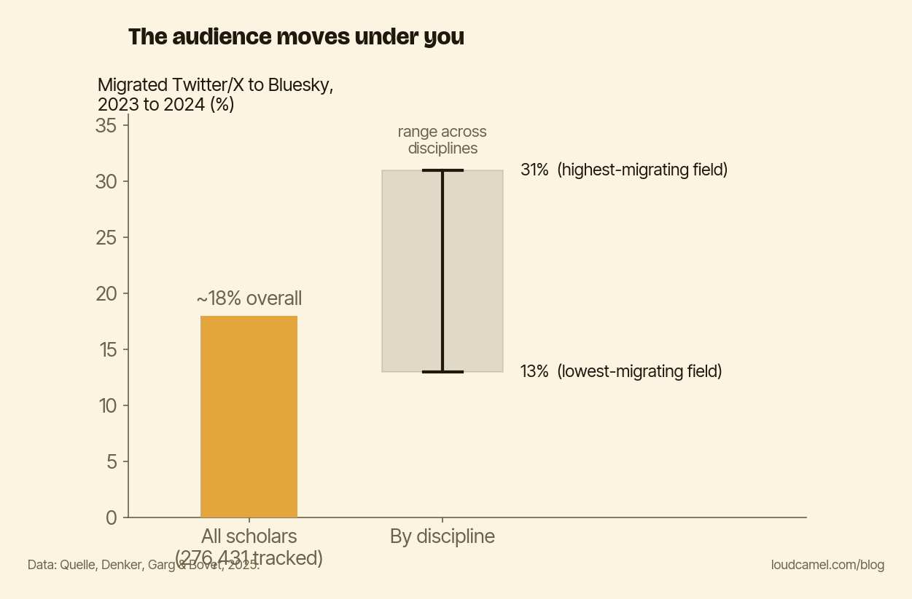

The ground keeps moving: why visibility is maintenance, not a project
Here is the objection I hear from researchers who would rather do this themselves: I will set up my visibility once and be done with it. Build the profiles, link the work, move on.
It is a reasonable instinct, and it is wrong. Not because the setup is bad, but because the ground under it keeps moving. That is the message of this post: even a flawless setup decays, because your audience does not sit still.
Your audience does not sit still
Quelle, Denker, Garg, and Bovet tracked 276,431 scholars as they moved from Twitter/X to Bluesky between January 2023 and December 2024. About 18% migrated over those two years. That is roughly one in six researchers picking up and leaving the platform where they used to be findable.
The rate was not uniform. It ran from about 13% to 31% depending on the discipline. If your field sits at the high end, nearly a third of your peers relocated in two years. The room you optimized for is emptying out, one colleague at a time.

The chart above shows that spread across fields.
It moves in waves, not on your schedule
The same study found the migration was contagion-driven. When one of your peers moved, your own probability of moving that day roughly doubled. Then the effect faded within about a week.
So the audience does not drift at a steady, predictable pace you can plan around. It moves in peer-driven waves. A discipline can stay put for months and then shift in a burst, because a few well-connected people jumped and pulled their networks behind them. You do not control the timing. You can only notice it happened.
Why “set it and forget it” fails
Put those two facts together and the do-it-once plan collapses on its own terms. Even a perfect setup, every paper linked, clean bio, decays. Not because anything you built broke, but because the channel that carried attention quietly moved somewhere else.
A profile you optimized two years ago can become a room nobody is in. The link still works. The followers are still listed. But the people who used to scroll past your work now spend their attention on a different platform, and your perfectly maintained presence sits in the old one, talking to an empty room. This is the part that is easy to miss, because nothing fails loudly. Visibility does not break. It just stops paying off, slowly, while everything looks fine.
Treat it like software, not a monument
A monument is finished the day you unveil it. Software needs maintenance, or it rots. Your visibility setup is software. The platforms shift, the audience migrates in waves you did not schedule, and the only fix is to periodically follow them, to check where attention has gone and make sure your current work is actually present there, not just in the place it used to live. (This is one spot where outsourcing helps. A service like Loud Camel exists partly so you are not the one manually noticing the ground moved. But you can do the first check yourself.)
Do this this week
Spend fifteen minutes on two questions. First: is the audience for my field still where I last set up shop, or has a chunk of it moved? Second: is my current work actually present where they are now, not the version of “now” from two years ago?
If both answers are yes, you are done for the quarter. If either is no, you have found the maintenance that was quietly overdue. The setup is never finished, and that is not a flaw in your plan. It is the nature of the ground.